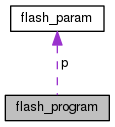

Standalone SWD programator
Hlavní stránka
Třídy
Soubory
Datové struktury
Rejstřík datových struktur
Dokumentace struktury flash_program
Diagram tříd pro flash_program:

[
vysvětlivky
]
Dokumentace pro tuto strukturu (struct) byla generována z následujícího souboru:
src/lpc_flash.c
Generováno so 15. zář 2018 14.46:19 pro projekt Standalone SWD programator programem
1.8.11
 1.8.11
1.8.11